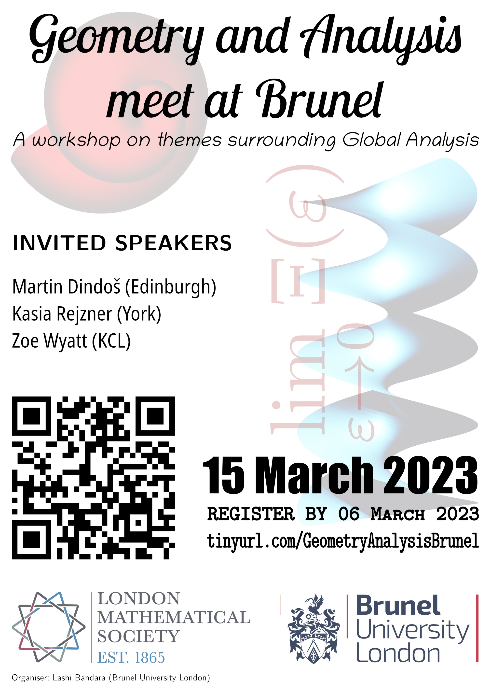

Registration is required for attendance. Please register before 23:59 on 06/03/2023 by emailing Lashi Bandara on lashi.bandara@brunel.ac.uk

This is a one day conference around global analysis, to explore the ways in which harmonic analysis, geometry and mathematical physics interact with each other.
This event is funded by the London Mathematical Society through their Celebrating New Appointments Grant Schemeas well as the Department of Mathematics, Brunel University London
There will be four talks given in total, with the host (Lashi Bandara) being one of the speakers, along with invited talks by:
Want to help advertise? Print the high-res poster: Poster-gab.pdf